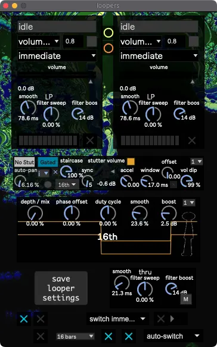

Loopers
A “one-button” looper with a handful of effects.
{kind=link}
The looper has four main states.
Idle (Cleared)
Prepared
Recording
Looping
Prepared
Fading Out
The looper record / fade out binding)
advances the looper state from Idle to Prepared. Playing tuba advances from Prepared to Recording.
After 8 or 16 bars, once the tuba’s envelope drops below the noise gate, the looper automatically stops Recording
and starts Looping. Once the looper starts looping, the main signal path switches from Wobble to Solo. Hitting the looper record / fade out button a second time
prepares the looper to begin Fading Out when the loop repeats.
There’re two loopers because they switch back and forth every loop, which was supposed to allow one looper to record while the other fades out, but I never use it that way.
Below the looper status is a menu that sets the kind of fade out, with four options:
no fade
volude fade
highpass sweep up
lowpass sweep down
The numberbox to the right of that menu sets the curvature of the volume fade.
The toggle to the right of the numberbox sets wether the looper fadeout’s beginning is quantized to one bar, or one loop.
The toggle below the filter boost knob should be enabled if the stage volume overwhelms the noise gate.
After
looper record / fade outpressed, wait until tuba starts playing to start recording. After 8/16 bars pass, wait until tuba stops playing to stop recording.If stage volume too loud and noise gate’s overwhelmed, start recording when looper button pressed, and stop recording 8/16 bars later.
Below the loopers are the post-loop Stutter, Tremolo, & Filters. The following bindings are available:
Looper Stutter EnableLooper Stutter AccelLooper Stutter Random RhythmLooper FiltersLooper Tremolo DutyLooper Tremolo Depthloopers tremolo and stutter subdivisionmute loopers
Preferences
The toggles and menus at the botton of the looper window are preferences for how the looper should function. Mouseover the toggles to view tooltips describing their actions. From left to right, top to bottom:
toggle 1
Makes SousaPlayback play a random riser clip whenever the looper starts fading out.
toggle 2
Makes the looper auto-record after the tuba drops below the noise gate a certain number of times /after/ the looper finishes fading out.
menu
When the looper finishes fading out, the main signal path switches from Solo to Wobble. The “switch after tuba stops playing / switch immediately” menu decides wether the switch happens after the looper finishes fading out AND after the tuba stops playing, or if the switch happens immediately after the looper finishes fading out.
toggle 3
Makes SousaPlayback automatically change tempo during the fadeout after the looper has recorded a certain number of loops. The tempos are 128, 140, 156, and 172.
toggle 4
Auto-adjust looper length. when tempo > 150, use 16 bars. When tempo < 150, use 8 bars.
menu
When toggle 4’s off, this menu sets the looper length.
toggle 5
Plays a droplet sound effect through the metronome channel whenever the looper’s prepped, done recording, or starts fading.
toggle 6
Enable to allow looper to record stutter.
auto switch / manual switch menu
Sets wether Solo FX is toggled automatically when the looper starts and stops looping, or manually with the
Toggle SoloFXbinding.